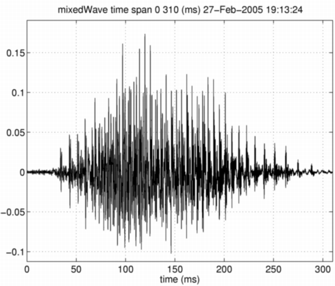

| | 付属情報をほとんど用いないモーフィング | Contents | Index |
まず、波形そのものを混合しても、二つの中間の声にはならないことを確認しましょう。 Mオブジェクトの波形情報を、指定された混合比率で混合する関数を用います。 この関数は，混合率を r とすると、最初のMオブジェクトを (1-r)の割合で，２番目のMオブジェクトを r の割合で混合します。
mixedWave = waveformMorphing(neutralHai,angryHai,0.5); displayMobject(mixedWave,'waveform','mixedWave');
ここでは、以下のモジュールとの整合性を取るために、 モーフィングの結果をMオブジェクトとしています。 合成された信号 は波形を混合しただけなので、 二つの声が聞こえてしまいます。

| | 付属情報をほとんど用いないモーフィング | Contents | Index |